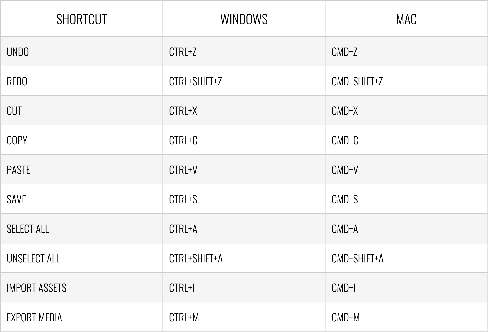
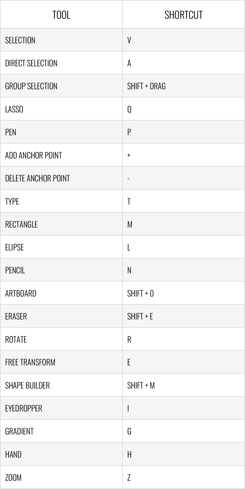

Beginner | 33 mins
Welcome to Illustrator
1
Start Your Engines!
Firstly, download and install Adobe Illustrator on your computer. Depending on your choices, you may select between a standalone version or a subscription-based Creative Cloud version.
2
NEW INTERFACE, WHO THIS?
Learn the interface: When you load Illustrator, spend some time looking around and get to know the many panels, menus, and tools that are available. There are numerous tools for producing and altering vector graphics in the main toolbar on the left.
Start with the essential tools in Illustrator, such as the Selection tool, Pen tool, Shape tools, and Type tool. These tools will allow you to select objects, create paths, draw shapes, and add text to your artwork.
3
Keys to Success
These are some of the common hotkeys and shortcuts typically used in Illustrator


4
Who's up for the challenge?
Now it's time to follow the main tutorial after getting familiar with the interface. You will learn how to design a vector character, design a simple logo, and learn some typography tips.
5
Illustrator Tips
Here are some tips pros don’t want you to know:
- Master the Pen Tool: The Pen Tool is one of the most powerful and versatile tools in Illustrator. Spend time practicing and you will surely get the hang of it.
- Utilize the Shape Builder Tool: The Shape Builder Tool allows you to combine, subtract, and divide shapes easily
- Transform options: Illustrator provides precise control over transformations. Make use of the Transform panel to scale, rotate, skew, and position objects with accuracy.
Are you sure you're a beginner?
You’ve completed the course! now try and take on the other tutorials!